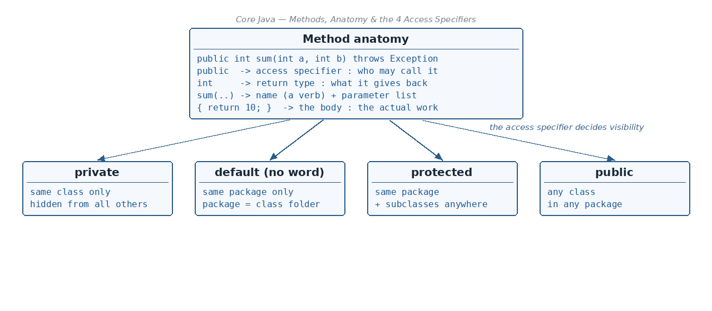

Return type
☕ 8 min read · 🎬 Video walkthrough · 📊 UML diagram · 💻 Runnable code
⚡ In a nutshell — How to make a truly constant variable with static final · What a method is and why we use one · The four access specifiers (public, private, protected, default) and what a package is · The full anatomy of a method declaration — every word explained
Start with a plain static variable:

class Student {
static int empId = 10;
}
+--------------+
| empId = 10 | <- ONE shared copy (static)
+--------------+
^ ^
| |
+---+--+ +---+--+
| emp1 | | emp2 | Both of them CAN change the
+------+ +------+ value of empId to any value!
static gives us one shared copy — but anyone can still overwrite it. How do we make it constant? Add final:
static final int EMP_ID = 50; // (constant variable)
static → one copy, belongs to the class.final → the value can never be changed after it is set.public class ConstantDemo {
static final int MAX_MARKS = 100;
public static void main(String[] args) {
System.out.println(MAX_MARKS);
// MAX_MARKS = 200; // COMPILE ERROR: cannot assign a value to final variable
}
}
// Output:
// 100
Remember:
static= shared,final= locked. Together they make a true constant, named in CAPITALS.
Analogy: a method is like a recipe card. You write the steps once; whenever you want that dish, you just call the recipe by name instead of rewriting every step.
public class MethodIntro {
static int add(int a, int b) { // written ONCE
return a + b;
}
public static void main(String[] args) {
System.out.println(add(2, 3)); // reused...
System.out.println(add(10, 40)); // ...again and again
}
}
// Output:
// 5
// 50
Package: a collection of logical or similar classes — like a folder that groups related classes together (e.g. java.util holds utility classes).
Access specifiers decide who is allowed to see and use a class member:
Visibility at a glance:
public — Yes — Yes — Yes — Yesprotected — Yes — Yes — Yes — Noprivate — Yes — No — No — Nopublic class BankAccount {
private double balance = 100.0; // hidden: only this class can touch it
protected String branch = "Jaipur"; // this package + subclasses
String bankName = "MyBank"; // default: this package only
public String owner = "Asha"; // everyone
public double getBalance() { // public "gate" to the private data
return balance;
}
public static void main(String[] args) {
BankAccount acc = new BankAccount();
System.out.println(acc.owner + " has " + acc.getBalance());
}
}
// Output:
// Asha has 100.0
Remember: think of circles of trust —
private(only me) → default (my package) →protected(my package + my children) →public(the whole world).
Here is one method with every part labelled:
public int sum (int a, int b) throws Exception {
return 10;
}
public -> Access specifier (who may call it)
int -> Return type (what it gives back)
sum -> Method name (a verb — an action)
(int a, int b) -> Argument / parameter list (inputs)
throws Exception -> declares problems it may pass to the caller
{ return 10; } -> Method body (the actual work)
void.int, double, String, Employee).calculateSalary, printReport).void sayHello().return.return; even when the return type is void.public class BodyDemo {
static void greet(String name) { // void method
if (name == null) {
System.out.println("No name given");
return; // early exit — allowed even in void!
}
System.out.println("Hello " + name);
} // ...or it ends here naturally
public static void main(String[] args) {
greet(null);
greet("Ravi");
}
}
// Output:
// No name given
// Hello Ravi
Methods which are already defined and ready to use in Java — you just call them.
public class SystemDefined {
public static void main(String[] args) {
System.out.println(Math.sqrt(25)); // sqrt is written by Java, not by us
System.out.println(Math.max(3, 9));
}
}
// Output:
// 5.0
// 9
Methods the programmer creates based on the program's necessity — like add() and greet() above.
More than one method with the same name in the same class — they differ by their parameter lists. Java picks the right one by looking at the arguments you pass.
public class OverloadDemo {
static int area(int side) { return side * side; } // square
static int area(int length, int width) { return length * width; } // rectangle
public static void main(String[] args) {
System.out.println(area(4));
System.out.println(area(4, 5));
}
}
// Output:
// 16
// 20
A subclass has the same method as the parent class (same name, same parameters) and provides its own version.
class Animal {
void sound() { System.out.println("Some generic sound"); }
}
class Dog extends Animal {
@Override
void sound() { System.out.println("Woof!"); } // overrides the parent version
}
public class OverrideDemo {
public static void main(String[] args) {
Animal a = new Dog();
a.sound(); // the Dog version runs
}
}
// Output:
// Woof!
Math.sqrt(25) — no object needed.When to declare a method static:
Employee.create("Ravi").public class MathUtil {
static int square(int n) { // pure utility: uses only its argument
return n * n;
}
int instanceValue = 10;
public static void main(String[] args) {
System.out.println(MathUtil.square(6)); // called with the CLASS name
// System.out.println(instanceValue); // ERROR: static cannot
// // read instance variables
}
}
// Output:
// 36
final on a method means its implementation cannot be changed. If a child class could not change the implementation anyway, allowing overriding would be pointless — so Java forbids it outright.class Payment {
final void verify() { System.out.println("Verified securely"); }
}
class UpiPayment extends Payment {
// void verify() { } // COMPILE ERROR: cannot override final method
}
Use final when the logic is critical and must stay identical for every subclass (security checks, core algorithms).
;.abstract class Shape {
abstract double area(); // declaration only — no body
}
class Circle extends Shape {
double r = 2.0;
double area() { return 3.14 * r * r; } // child provides implementation
}
public class AbstractDemo {
public static void main(String[] args) {
Shape s = new Circle();
System.out.println(s.area());
}
}
// Output:
// 12.56
Use abstract methods when the parent knows that something must exist ("every shape has an area") but only the children know how.
VARARGS let a method accept a variable number of inputs in one parameter — call it with 0, 1, or 100 values.
The rules:
type... name).public class VarargsDemo {
static int sum(String label, int... numbers) { // varargs LAST — rule 3
int total = 0;
for (int n : numbers) { // inside, it behaves like an array
total += n;
}
System.out.println(label + " " + total);
return total;
}
public static void main(String[] args) {
sum("Two values:", 10, 20);
sum("Four values:", 1, 2, 3, 4);
sum("No values:"); // even zero values is fine
}
}
// Output:
// Two values: 30
// Four values: 10
// No values: 0
// ILLEGAL examples — these do NOT compile:
// void bad1(int... a, int... b) { } // two varargs — breaks rule 2
// void bad2(int... a, String s) { } // varargs not last — breaks rule 3
Remember: varargs = "...as many as you like" — but only one
..., and always at the end.
static final, named in CAPITALS; static shares one copy, final locks the value.public (everywhere) > protected (package + subclasses) > default (package only) > private (same class only). A package is a folder of logically similar classes.accessSpecifier returnType name(parameters) throws ... { body }.void if nothing comes back; method names are verbs in camelCase; parameter lists may be empty; return; can end even a void method early.Math.sqrt), user-defined, overloaded (same name, different parameters, same class), overridden (same signature, subclass), static (class-level, no instance access, not overridable — great for utilities and factories), final (cannot be overridden), abstract (declaration only, children implement).👏 Found this useful? Give it a few claps so more developers discover it, and follow for the whole series — every article ships with a UML diagram, runnable code, a narrated video, and a companion PDF. Happy building! 🚀